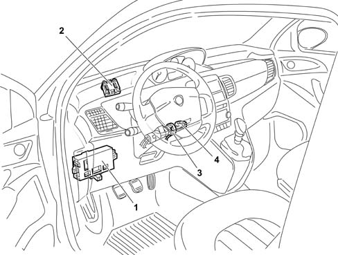
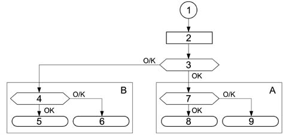
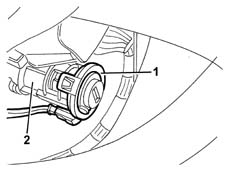
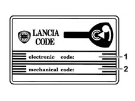
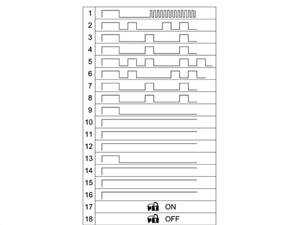
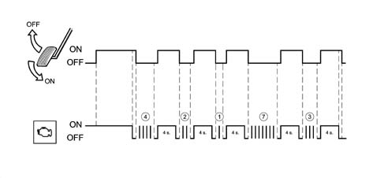
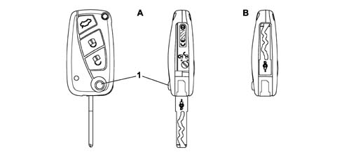
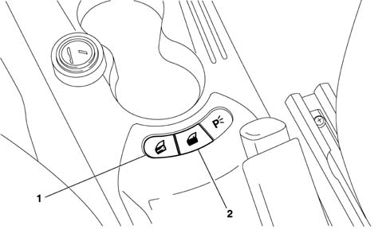

5580E anti-theft device
- Path
- Descriptions > 55 ELECTRICAL EQUIPMENT > 5580 SPECIAL ACCESSORIES > 5580E anti-theft device
- Kind
- system description
- Applies to
- all engines; all production periods
- Interactive page
- https://sloeber94.github.io/elrnDB-lYpsln/en/#/2427450
Applies to: all engines; all production periods
The anti-theft device consists of the CODE system which immobilizes the engine.
OVERALL VIEW

1 - BCN 2 - ECN 3 - Aerial 4 - Key
Applies to: all engines; all production periods
SPECIFCATIONS
For the engine immobilizer function, the cars are fitted with an electronic system called LANCIA CODE II.
The LANCIA CODE system allows the engine to start by means of the Engine Mangagement Node (hereafter called NCM) only after receiving a secret code memorised previously.
Applies to: all engines; all production periods
SYSTEM SPECIFICATIONS
The second generation Code system is integrated in the Body Computer Node (hereafter called NBC).
Applies to: all engines; all production periods
COMPOSITION
The LANCIA CODE system comprises 5 basic elements (in addition to the Body Computer which acts as control unit):
- C CAN line for dialogue with BCN and ECN
- bidirectional serial line for recovery ( W line)
- two to eight electronic keys containing a transponder with a secret code;
- an aerial which reads the code contained in the key transponders;
- engine control unit (NCM)
Applies to: all engines; all production periods
GENERAL
The LANCIA CODE allows engine control management to be commenced by the NCM by coded dialogue between the NBC and NCM during the pre-starting stage.
After the ignition is switched on, the NCM sends a request code to the NBC which responds only after recognizing (via the aerial) a known electronic key inserted in the ignition switch. If the secret code contained in the response is valid, the ECM continues with the usual engine control activity, allowing the engine to be started.
The NCM can memorise the secret code only by means of a particular procedure.
The LANCIA CODE function is also guaranteed in the case of malfunction of the other NBC functions.
Applies to: all engines; all production periods
INTERACTION OF LANCIA CODE WITH THE KEY
Each key contains a transponder with the IDENTIFIER CODE and the SECRET CODE.
As soon as the ignition is switched on (+15), the transponder sends the identifier to the LANCIA CODE which, recognising it as one of the enabled ones, proceeds with the strategy for recognising the SECRET CODE.
If the identifier is not recognised, the procedure aborts, preventing the engine from being started.
The SECRET CODE is recognised by means of a challenge-response algorithm with exchange of encrypted code.
The code recognition time does not exceed 160 ms per attempt.
The LANCIA CODE attempts for 1 second to acquire the transponder.
Applies to: all engines; all production periods
DIALOGUE BETWEEN ENGINE MANAGEMENT NODE AND LANCIA CODE
The dialogue between the LANCIA CODE (NBC) and the NCM takes place via the C-CAN under normal operating conditions. Each exchange of information between the LANCIA CODE and the NCM (the LANCIA CODE never interrogates the NCM, but only answers after a request from the latter).
When the ignition is switched on, the flow of operations involving code exchange between the LANCIA CODE and the NCM depends on the state (virgin or memorised) of the NCM.
If the NCM is virgin, the procedure involves the fix code request to the LANCIA CODE: in this way, the NCM learns and memorises the secret code. This procedure is called CODE RECORDING.
If the NCM is programmed, the procedure involves checking that the fix code memorised in the engine control unit is the same as that memorised in the LANCIA CODE (NBC): the NCM asks the NBC for the secret code and compares it with its own. This procedure is called CODE VERIFY

1 - Key on 2 - NCM initialisation 3 - Memorised ECN state OK, virgin OK AT CODE VERIFY 7 is the code valid? 8 engine operation is permitted 9 engine operation is not permitted B CODE RECORDING (code memorisation) 4 memorisation completed correctly? 5 engine operation is permitted 6 engine operation is not permitted
Applies to: all engines; all production periods
CODE RECORDING
The CODE RECORDING procedure is the memorisation of the fix code in the engine control unit.
Only after memorising the identifiers, secret code and fix code, the LANCIA CODE is ready to meet the request to transmit a code from the NCM which is still virgin.
After 'power on', the engine control unit initialises its software and, if it is virgin, asks for the fix code.
If the LANCIA CODE is not virgin, it will respond by sending the fix code, but only after recognising an enabled key. If it is a disabled (unknown) key or there is no key, the LANCIA CODE does not respond.
If the LANCIA CODE is virgin and there is no transponder in the key and a fix code request is sent from the NCM, the LANCIA CODE does not respond.
Applies to: all engines; all production periods
CODE VERIFY
This is the standard procedure which is repeated during the life the car whenever the driver inserts the key in the ignition switch and turns the ignition on (+15) (= KEY ON): this procedure allows engine starting if the inserted key is enabled.
The code verify procedure continues even wne the driver turns the key to +50 (CRANKING).
After the key is on KEY ON, the LANCIA CODE recognises whether the transponder in the key is one of the enabled ones.
At the same time, with the key on +15 or +50, the ECN initialises its software to verify whether a fix code has already been memorised. If it has, it will send a (FIX code request) to the LANCIA CODE.
In response to this request, the LANCIA CODE will send the fix code, encrypted, to the engine control unit, only if the transponder has been recognised as enabled.
If the LANCIA CODE receives further FIX code requests, it again reads the transponder in the aerial before responding to the NCM.
If the result of the transponder recognition is negative (incorrect transponder, no transponder in the key, etc.), the LANCIA CODE will send the code (incorrect transponder or no transponder) to the engine control unit.
If the LANCIA CODE is virgin and the ECN sends a FIX code request, the LANCIA CODE, after recognising a transponder, responds by sending an encrypted virgin ECN recognised transponder code.
Applies to: all engines; all production periods
METHOD OF USING C-CAN OR RECOVERY W LINE
Communication between the BCN and ECN takes place by default on the C-CAN line; if the C-CAN network is faulty, the recovery strategy is as follows:
- the ECN passes on to recovery on the W serial line, requesting the code from the BCN: if the outcome is positive, starting is permitted
- if there are also problems on the W line, after re-transmission attempts, the ECN passes on to recovery from the accelerator pedal or the diagnostic instrument.
The recovery strategy is main managed by the ECN which acts as master in the communication: the BCN, which has to respond to code requests coming from both the C-CAN network and the W serial line.
Applies to: all engines; all production periods
COMMUNICATION ON C-CAN NETWORK
The communication between Body Computer and ECN is achieved by the following two CAN messages:
- Immo code request (sent from ECN and received by BCN)
- Immo code response (sent from BCN and received by ECN)
Applies to: all engines; all production periods
COMMUNICATION ON W LINE
If, because of a malfunction on the CAN network, you move on to the recovery condition, the exchange of codes between ECN and BCN takes place on the W serial line.
This code exchange takes place only for the CODE VERIFY procedure: it is therefore not possible to carry out a CODE RECORDING on the W line.
The data exchange on the serial line takes place in the same way as on the C-CAN network: the ECN control unit is master of the communication, while the BCN responds to the requests received from the ECN.
Two messages travel on the serial line: immo code request and immo code response
Applies to: all engines; all production periods
VERIFYING W LINE ELECTRICAL CONNECTION
As the dialogue on the W line only takes place in the case of recovery, an ERROR condition would only be recognised at the time of use, so the end customer would not be able to move the car.
A strategy of verifying the W serial line is therefore introduced in order to diagnose the line itself.
Applies to: all engines; all production periods
PROTECTION CODES
The protection codes used by BCN and ECN are given below
UNIVERSAL CODE: this is the code which the LANCIA CODE, not yet programmed, sends to the ECN when it has recognised the presence of a transponder in the key.
The LANCIA CODE warning light comes on at a frequency of 1.6 Hz and duty cycle of 50%.
The flashing of the light explains that the system is correctly connected and working, but the car is not protected by a code.
IMMO CODE: This is the basic code from which the secret code and fix code are obtained. An automatically generated immmo code is associated with each car. All the other secret codes used by the LANCIA CODE function are generated from the immo code.
SECRET CODE: This is the code resident in the transponder. It is memorised in the transponders contained in the car keys at the time of programming the transponders, and in the LANCIA CODE at the time of programming the keys at the end of the line.
FIX CODE: This is memorised in the LANCIA CODE at the time of end-of-line programming.
ELECTRONIC CODE (PIN): This is obtained from the fix code and is stamped on the CODE CARD which is delivered to the car's owner; it is a 5-digit decimal code (0 is not permitted).
It is used to access, in a protected manner, the BCN memory in order to re-programme or programme new remote control keys and/or carry out particular diagnostic functions.
It is also used in the procedure of recovery from accelerator pedal described in the engine control unit specification.
IDENTIFIER: It is resident in the transponder and is different for each transponder. It is memorised in the LANCIA CODE during the programming procedure. The LANCIA CODE manages a table of enabled identifications and one for disabled identifications.
Applies to: all engines; all production periods
DESCRIPTION OF THE COMPONENTS
The LANCIA CODE on the vehicle is a function of the NBC
The main functions of the LANCIA CODE are:
- to recognise the introduction and rotation of a key in the ignition switch (+15);
- to de-activate the alarm after recognition of an enabled key;
- to emit an electromagnetic field to read the key's transponder;
- to send the random code to the transponder;
- to receive the cryptographic code emitted by the key;
- to memorise up to 8 identifiers;
- to memorise the secret code;
- to manage a list of a maximum of 8 enabled identifiers;
- to manage a list of at least 16 permanently disabled identifiers;
- to manage the C-CAN line to the engine control unit;
- to manage the lighting up of the warning light on the panel by communication with the instrument paenel;
- to carry out self-diagnosis.
Applies to: all engines; all production periods
supply of new LANCIA CODE
In the case of replacement of the LANCIA CODE, the entire BODY COMPUTER needs to be replaced.
The Parts department, on the basis of the car's data (chassis no.), will supply the new Body Computer with the protection codes already memorised.
Applies to: all engines; all production periods
COMPOSITION
The aerial assembly consists of a toroidal reel aerial with built-in connector on the aerial body.
The connecting wiring to the BCN is integrated in the dashboard wiring loom.
Applies to: all engines; all production periods
OPERATING
The aerial is supplied by the BCN to energise the key's transponder.
As the aerial needs to be as close as possible to the transponder (for electromagnetic immunity, its small size and the limited range of the transponder), it is attached axially to the ignition switch.

1 - CODE aerial 2 - Ignition switch
Applies to: all engines; all production periods
OPERATING
The mechanical key contains a cryptographic transponder in the handle.
When the key is inserted in the switch and the ignition is switched on (+15), the transponder is energized by the aerial and responds by emitting the secret code in a variable and encrypted way.
The emission into the air has sufficient power to have high immunity to electromagnetic interference and a range such that it is received by the aerial mounted in the ignition switch.
If the code is recognised as valid, the LANCIA CODE sends the engine control unit, at the request of the latter, a coded signal that allows the engine to be started.
Up to 8 keys can be programmed in the LANCIA CODE.
Applies to: all engines; all production periods
KEY TRANSPONDER
The transponder contained in the key has the following coded in its memory:
- SECRET CODE, the same for each transponder in the same key kit;
- IDENTIFIER, different for each transponder produced;
- DATE OF PROGRAMMING the secret code
The identifier differs from transponder to transponder to ensure that, even if duplicates are requested on the Network, there are not several transponders with the same identifier.
Applies to: all engines; all production periods
supply of spare keys
Keys may only be supplied by the Parts Dept.
With the chassis number of the car, the Parts Dept. can make copies of the keys with the relevant codes (identifier and secret).
Applies to: all engines; all production periods
Reprogramming the keys
Reprogramming the keys enables the keys authorised to start the car to be memorised in the BCN.
The new keys to be programmed and those already programmed will be inserted in the ignition switch to be recognised by the LANCIA CODE which will memorise in the table of enabled identifiers those presented during the procedure, and will transfer from the latter table to the table of disabled identifiers those identifiers which have not been presented.
Applies to: all engines; all production periods
Table of disabled keys
If an enabled key is no longer available (lost, stolen or no longer working), the subsequent key programming procedure (for example necessary for memorising the new replacement key) should disable its operation.
The LANCIA CODE therefore manages a table in EEPROM which can contain the data relating to 16 disabled keys: the identifiers of the enabled keys not presented during the reprogramming procedures are transferred into this table.
If the disabled keys table is full, any new key will replace the first key entered on the table.
This table also permits traceability of the keys used on the car.
Applies to: all engines; all production periods
Key reprogramming prodecure
The key reprogramming procedure is carried out/guided by the Diagnostic/Test Instrument: this procedure is activated by access protected by the car's PIN.
Once the procedure is activated, the flow is as follows:
- the diagnostic instrument instructs the NBC to initialize the key learning procedure.
- the operator enters the first key and requests learning from the BCN: the BCN reads the transponder after Key-on, verifies whether the secret code is correct and, if it is, learns the key's identifier.
- the operator repeats the previous operation for all the car keys.
- once all the keys have been learnt, the diagnostic instrument instructs the BCN to memorise them permanently in EEPROM, in accordance with the following procedure:
- the BCN compares the learnt identifiers with those currently in memory
- the data of the keys memorised in EEPROM but not presented during learning, they are moved to the disabled keys table.
- the data of the learnt keys are memorised in the enabled keys table only if they are not already present in the disabled keys table.
Up to a maximum of 8 enabled keys can be programmed.
Applies to: all engines; all production periods
DELETION FROM MEMORY OF A LOST KEY
The procedure is the same as that described in the previous paragraph. All the keys owned must be presented; those not presented will be deleted, i.e. transferred into the table of disabled identifiers. A lost key may be deleted from memory at any time by a diagnostic/test instrument. The identifier of that key is transferred into the disabled keys table and will no longer be recognised.
Applies to: all engines; all production periods
COMPOSITION
This card contains the following:
- The emergency code (electronic code) which allows the car to be started with the EXAMINER or another diagnostic instrument or, in an emergency, with the accelerator pedal procedure. It is also used to programme the keys and remote controls with the EXAMINER.
- The mechanical code of the keys (mechanical code) identifies the mechanical profile of the key, and must be specified in the order to receive the key already cut.

1 - Electronic code 2 - Mechanical code
Applies to: all engines; all production periods
OPERATION
The emergency electronic code is also used for the system fault diagnosis and for other operations using the Examiner or other diagnostic equipment. Many of these operations (e.g. 'Programming Keys') can only be carried out after this code has been entered.
Therefore before any operation, the Customer must be asked for the Code Card.
Applies to: all engines; all production periods
SPECIFICATIONS
The code warning light is located on the instrument panel; it is controlled by a message on the B-CAN network by the NBC.
Applies to: all engines; all production periods
Method of operation and flashing times of CODE warning light
The NBC gives the instruction to the panel, via the CAN network, to switch on the LANCIA CODE warning light as shown in the 'code warning light blinking modes' table, where the times are considered with a tolerance of ± 10%.
In accordance with the blinking modes (from 1 to 16) identified in the top table, the code warning light should flash as shown in the following table.

1 - Virgin BCN, virgin ECN, C-CAN line and W line connected, transponder recognised, starting permitted 2 - Virgin BCN, virgin ECN, C-CAN line and W line connected, transponder not recognised, starting not permitted 3 - Virgin BCN, virgin ECN, C-CAN line not connected and W line not connected, transponder recognised, starting not permitted 4 - Virgin BCN, virgin ECN, C-CAN line not connected and W line not connected, transponder not recognised, starting not permitted 5 - Virgin BCN, memorised ECN, C-CAN line connected and W line connected, transponder recognised, starting not permitted 6 - Virgin BCN, memorised ECN, C-CAN line connected and W line connected, transponder not recognised, starting not permitted 7 - Virgin BCN, memorised ECN, C-CAN line not connected and W line not connected, transponder recognised, starting not permitted 8 - Virgin BCN, memorised ECN, C-CAN line not connected and W line not connected, transponder not recognised, starting not permitted 9 - Memorised BCN, virgin ECN, C-CAN line connected and W line connected, transponder recognised, starting permitted 10 - BCN memorised, virgin ECN, C-CAN line connected and W line connected, transponder not recognised, starting not permitted 11 - BCN memorised, virgin ECN, C-CAN line not connected and W line not connected, transponder recognised, starting not permitted 12 - BCN memorised, virgin ECN, C-CAN line not connected and W line not connected, transponder not recognised, starting not permitted 13 - BCN memorised, ECN memorised, C-CAN line connected and W line connected, transponder recognised, starting permitted 14 - BCN memorised, ECN memorised, C-CAN line connected and W line connected, transponder not recognised, starting not permitted 15 - BCN memorised, ECN memorised, C-CAN line not connected and W line not connected, transponder recognised, starting not permitted 16 - BCN memorised, ECN memorised, C-CAN line not connected and W line not connected, transponder not recognised, starting not permitted 17 - The receipt, by the NBC in VERIFY mode, of a delayed key code following a code request made after 500 ms by Key ON and which caused the code warning light to come on permanently, should cause the light to go out immediately, indicating that the system is connected correctly and working, and the car is protected. 18 - Particular blinking modes of the light are not required when the BCN is in the 'Diagnosis' state
Applies to: all engines; all production periods
FAULT DIAGNOSIS
The LANCIA CODE function permits the possibility of carrying out self-diagnosis of the parts which make up the system.
The NBC can identify and memorise in EEPROM the presence of the following malfunctions:
Transponder:
- faulty or absent or with incorrect secret code
- deleted/disabled
- unknown/not memorised
Transponder aerial:
- faulty electrical connection (open circuit, short circuit to earth or to battery)
Applies to: all engines; all production periods
RECOVERY PROCEDURE BY ACCELERATOR PEDAL
Whenever the customer wishes to start the engine and has problems with the LANCIA CODE, the following procedure should be activated.
The Recovery procedure is an emergency procedure which allows the customer to regain possession of the car if he has lost a key or if the key is damaged. By 'manual' entry of a sub-code (EMERGENCY CODE).
The RECOVERY PROCEDURE can only be activated after the NCM has entered the 'ENGINE IMMOBILIZED' state.
The RECOVERY PROCEDURE by accelerator pedal can be repeated a limitless number of times;
The RECOVERY PROCEDURE by accelerator pedal must be carried out fully (5 digits); there will be no message if one or more digits of the entered code are incorrect; the only way to check whether the code is correct is to complete the procedure and try to start the engine; the procedure can nevertheless be interrupted by KEY OFF.
If the accelerator pedal is released before a time-out (8 s the first time, 4 s the other times), the CHECK ENGINE warning light will not go out and the RECOVERY PROCEDURE will be aborted.
To start the recovery procedure, the user must carry out the following operations in order:
- Read the code on the CODE CARD.
- Turn the key to ON. The diagnosis warning light comes on for the self-test;
- Press and hold down the accelerator pedal. The diagnosis warning light goes out after 8 s.
- When the diagnosis light goes out, release the accelerator pedal.
- After the pedal has been released, the warning light will flash at a frequency of 0.8 Hz duty cycle 25% ON. When the warning light has come on a number of times equal to the first digit of the code, press and hold down the accelerator pedal to allow the ECN to recognise it. The diagnosis light will come on and stay on, fixed, for 4 s.
- When the diagnosis light goes out, release the accelerator pedal.
- After the pedal has been released, the warning light will flash at a frequency of 0.8 Hz duty cycle 25% ON. When the warning light has come on a number of times equal to the next digit in the code, press and hold down the accelerator pedal to allot the ECN to recognise it. The diagnosis light will come on and stay on, fixed, for 4 s.
- When the diagnosis light goes out, release the accelerator pedal.
- Repeat these operations for all the other figures.
- After the pedal has been released, when the last digit has been recognised, the warning light will flash at a frequency of 1.6 Hz duty cycle 25% for 4 s, or will go out sooner, if engine starting is recognised (>450 rpm) indicating that the code has been accepted, or will come on fixed to indicate that the code has been rejected. If the code is accepted, start the engine. If the code is rejected, repeat the procedure from the beginning. For NCMsl which measure time, engine starting is permitted within 10 minutes without repeating the procedure.
The example of entering a code (42173) is illustrated in the diagram.

Applies to: all engines; all production periods
Protection system
The Vehicle Protection System makes it possible to combine the best features for protecting against a break in with comfortable usage.
The system can be operated, using the remote control (with 3 buttons and a rectractable metal insert), at a range of up to 20m away from the vehicle.
Applies to: all engines; all production periods
Central locking
On some trim levels (Oro and Keyless-Go option), the central locking system includes a dead lock, the independent unlocking of the driver's door and superopening/superlocking functions, whilst all trim levels include a series of protective functions (indepdent boot unlocking, automatic locking of the doors at speed) which can be personalized by the user through the menu on the instrument panel.
The mechanical key can be extracted.

A - Key closed B - Key extracted 1 - Key extraction button
Applies to: all engines; all production periods
Central locking
The catch in the driver's door makes it possible to lock and unlock the door using the mechanical key.
The vehicle is fitted as standard with a remote control and there are no mechanical safety knobs on the doors.
The boot can be opened through the electric, soft touch type handle acting on an electrical contact.
There is a panel on the vehicle tunnel with 2 buttons which operate the central locking and unlocking of the locks.
A red led on the driver's door pane indicates door lock system actions or status.
Applies to: all engines; all production periods
CENTRAL LOCK LOCK/RELEASE FROM OUTSIDE
The door locks can be centrally locked or unlocked either by inserting the mechanical key in the driver's door catch or by using the remote control buttons.
The locking is confirmed by the LED in the driver's door.
If the vehicle is locked from the outside, the door central locking and unlocking buttons and the boot release located in the passenger compartment are disabled and then re-enabled the next time the vehicle is unlocked.
If the key is turned to lock the vehicle when one of the front doors is open, the lock for that door does not mechanically perform the manoeuvre and it is therefore not possible to lock the door. A signal is given by the rapid flashing of the direction indicators and the LED in the door panel.
Applies to: all engines; all production periods
CENTRAL LOCKING LOCK AND RELEASE FROM INSIDE
The locks are unlocked from inside the vehicle through the operation of one of the two door opening levers located on the doors or by using the central locking/unlocking buttons located on the panel on the centre tunnel, near the gear lever.
By pressing the locking button, if the locks are unlocked, all the locks are then locked (including the boot), conversely, if the locks are already locked, pressing the unlocking button unlocks all the locks (see the appropriate section for unlocking the boot).

1 - Door locking button 2 - Door unlocking button
Applies to: all engines; all production periods
Independent driver's door unlocking (only for HIGH versions)
It is possible, using the instrument panel, to set the behaviour of the central locking system when the unlocking of the locks takes place through the driver's door:
- central unlocking (default): using the opening button on the remote control or by turning the key, all the vehicle doors are unlocked at the same time and access is allowed through any door.
- unlocking the driver's door: using the opening button on the remote control or when the key is turned, only the driver's door is unlocked, whilst the other doors and the boot remain locked, preventing acess by non authorized persons.
When setting the unlocking of the driver's door it is also possible to unlock the other doors by pressing the button on the remote control again or by turning the key a second time within 1 second of unlocking the driver's door.
It is therefore always possible to press the central unlocking button.
If, after having unlocked the doors, none of the doors or the boot is opened within 30 seconds (presuming the driver has gone away from the vehicle), it is automatically re-locked.
If the dead-lock was engaged before the unlocking, then it is not automatically re-engaged.
If any of the door handles is pulled, the lock for that door only is unlocked (release incorporated in the safety device) and the door is opened: if the other doors were locked, they remain so.
It is not possible to unlock the lock only because there are no safety knobs: the central locking/unlocking button must be used for this operation.
Applies to: all engines; all production periods
DEAD LOCK MODE (only for HIGH version)
The lock is fitted with a dead-lock function which makes it possible to place all the lock external linkage in neutral (with the exception of the key catch to allow for mechanical backup) thereby counteracting any break in attempts designed to move the lock and release the safety device. The dead-lock places the interior handle and the mechanical safety engagement device in neutral.
The dead-lock function is engaged by pressing the door locking button on the remote control twice or using the mechanical key when the doors are locked, turning the key a second time within 1 second of the locking manoeuvre. The engagement of the dead-lock is therefore a voluntary action. The engagement/disengagement of the dead-lock function is signalled: this takes place via the red LED in the driver's door panel (see signalling LED). If one of the vehicle doors is not properly shut, the dead-lock is not engaged: this prevents someone from being able to enter the vehicle when the door is open and then remaining locked inside once the door is closed.
Applies to: all engines; all production periods
Dead lock deactivation mode
The function is automatically deactivated for all the doors when the locks are unlocked (even when only the driver's door is unlocked.
The dead-lock function inhibits the door locking and unlocking buttons in the passenger compartment.
It is impossible to get out of the passenger compartment once the dead-lock function has been applied.
Applies to: all engines; all production periods
SIGNALLING LED
If the dead-lock function is present, there is a RED signalling LED in the driver's door panel.
1 - Led
Applies to: all engines; all production periods
SIGNALLING LED
The LED gives out the following signals:
- locking of the locks: the LED lights up for 3 seconds. If, when the locks are locked, some of the doors or the boot is not properly shut, then the LED will flash rapidly for 3 seconds;
- dead-lock engagement: after the dead-lock has been engaged, the LED will flash twice for 0.5 seconds and then move on to the deterrent signal.
- deterrent: once the signal that the doors are locked is over, the LED will flash rapidly to indicate that the vehicle is locked (deterrent function): the flashing ends the next time the locks are unlocked.
Applies to: all engines; all production periods
UNLOCKING AND OPENING THE BOOT
The boot which is fitted with an electric lock and an electric handle, works like a 3rd door; it is automatically centrally unlocked when the doors are unlocked, with the electric handle enabled to open the boot when it is operated: in this way the lock releases the boot and allows it to be raised.
If the 'unlock driver's door' has been requested, the boot will not be unlocked.
It is also possible to open it independently by pressing the special button in the remote control.
Even if the 'Independent Boot' option is activated, the boot is not unlocked; in this case, the only way to unlock it is to press the boot opening button on the remote control.
Applies to: all engines; all production periods
UNLOCKING THE BOOT INDEPENDENTLY
The behaviour of the boot can be set in the following 2 different ways:
- Boot subject to the central locking (default setting): the status of the boot follows the status of the doors. With the vehicle locked the boot is locked, with the vehicle unlocked the boot is unlocked.
- Boot indepedent: the boot is always locked and can only be opened using the mechanical key and the boot catch.
Applies to: all engines; all production periods
WINDOW AND ROOF LOCKING (only for HIGH version)
It is possible to close the windows in all the doors and the sun roof when the doors are closed by keeping the key rotated in the closed position.
The windows continue to move as long as the key is rotated.
In the same way it is possible to open the windows and the sun roof by keeping the key rotated in the closed position.
Applies to: all engines; all production periods
DOOR LOCK WITH VEHICLE SPEED
The function which automatically locks the doors and the boot when the vehicle speed exceeds 20 Km/h can be activated using the instrument panel. The doors and the boot remain locked when the speed goes below 20 Km/h, preventing access by non authorized persons. The function is not activated in default.
Applies to: all engines; all production periods
DOOR RELEASE FROM INERTIA SWITCH
Inertia switch status is acquired directly from the NBC therefore the NBC commands the unlocking of all the doors even if only that of the driver's door has been set according to the central locking strategy described previously.
The inertia switch only unlocks the boot only if the boot is subject to the doors.
If the boot is set at 'always locked' then the inertia switch does not operate the boot.
The NBC, for a second time, repeats the command to unlock the locks 1 sec. after the command sent previously.
Applies to: all engines; all production periods
INHIBITION DUE TO A HIGH NUMBER OF MANOEUVRES
If 10 locking / unlocking manoeuvres are carried out within 25 seconds then the NBC inhibits the locking / unlocking commands for 30 seconds.
As a result, the last manoeuvre, before the inhbition, can be an unlocking or a locking one.
Applies to: all engines; all production periods
DOORS / BOOT / BONNET LID OPEN ACOUSTIC SIGNAL
The inertia switch acquires the door, boot and bonnet lid signal (only if the alarm is fitted) and the vehicle speed signal from the B - CAN network.
If one of the doors or the boot or bonnet lid is open and the speed is above 4 Km/h then an acoustic signal is emitted.
Applies to: all engines; all production periods
REMOTE CONTROL UNIT
The radiofrequency remote control is equipped with a retractable metal insert and a signalling LED. It has an operating radius of twenty metres.
It is used in conjunction with the central locking system and has three buttons with the following functions:
Opening button:
- Pressing once briefly: unlocks the driver's door + relevant dead-lock + switching off alarm (if fitted) + switching on dimmed courtesy light through radio control with two confirmation blinks and auditory warning;
- Pressing twice briefly: unlocks all the doors + switches on courtesy light + dead-lock;
- Long press (more than 2 seconds): superopening of windows + sun roof (if fitted) + dimmed switching on of courtesy lights, when the button is released the openings stop in the current position.
Closing button:
- Pressing once briefly: locking of doors + boot + switching on of alarm (if fitted) + dimmed switching off of courtesy light with confirmation blink
- Pressing twice briefly: engagement of dead-lock;
- Long press (more than 2 seconds): superclosing of sun roof (if fitted) + windows and dimmed switching off of courtesy lights, when the button is released the closings stop in the current position;
Boot button:
- Pressing once briefly: unlocking of boot + switching off of alarm (if fitted)
- Long press (more than 2 seconds): unlocking of boot + switching off of alarm (if fitted) + raising of boot.
Applies to: all engines; all production periods
FUEL FLAP
The fuel flap is managed directly by the NPG and is therefore linked to the locked / unlocked state of the driver's door.
The fuel flap is unlocked by:
- central locking / unlocking command at the driver's door, via the catch, by means of remote control
- When the driver's door is opened if this door has been 'locked'. Therefore when the driver's door is opened the door open switch signals the opening to the NBC which supplies this information to the B - CAN network; the NPG reads the change in status from the network from door closed to open and energizes the central locking motor to also unlock the fuel flap.